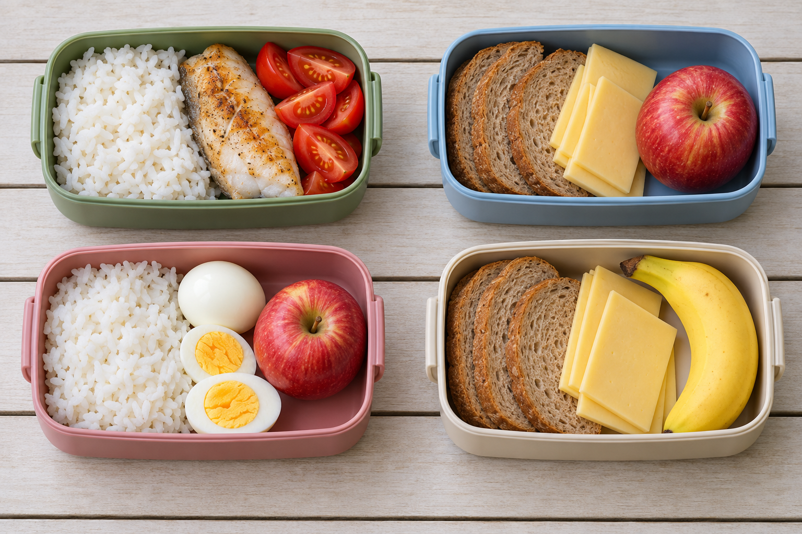

Vocabulary practice · Unit 4
Pack a picnic for four
Choose the picnic boxes4A
1Write the box letter for each person. Say one food reason.

Kim: Bread and an apple, please.
Ari: Rice and eggs, please.
Ben: Bread, but no apple.
Lee: Fish and tomatoes, please.
Kim
Ari
Ben
Lee
2Choose a box secretly. Cover the picture and name its three foods. Your partner finds the box.
Alone? Write three foods from one box, then check.
3Add a drink. Finish the four drink names.
- A white drink: m
- Two hot drinks: t and c
- A fruit drink: j
The flavor guessing round4B
4Ask about the flavor. Do not say the food name.
lemonchips with saltchili pepperice cream with sugar
Choose one food secretly. A partner asks up to three questions: Is it sweet? Is it salty? Is it sour? Is it spicy? Then they guess your food.
Alone? Write the flavors for lemon and chips with salt.
Lemon: . Chips: .